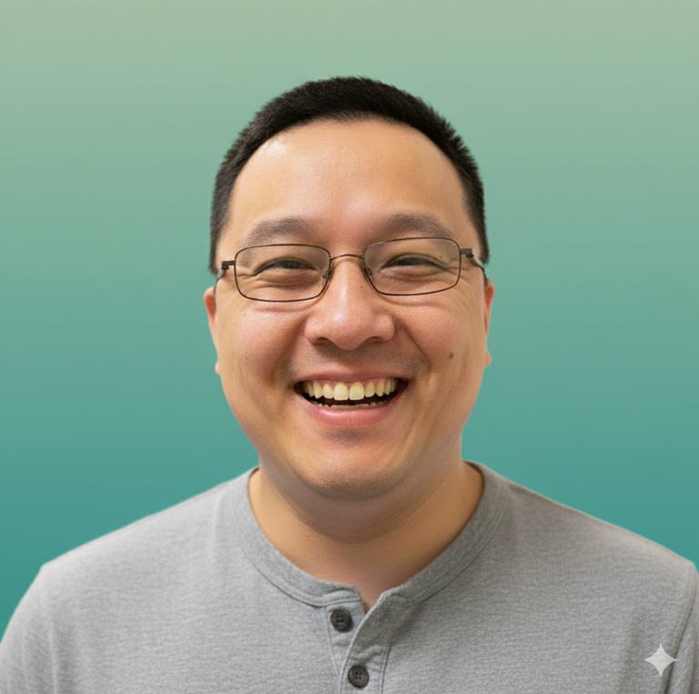

Sing Chen
Learner · Reader · Capability Builder · Systems Thinker
Clarity builds confidence.
Capability growth multiplies outcomes.
Story
Long before any of this, there was a kid who would always ask why, more interested in understanding than in grades, chasing down answers that didn't come fast enough from anyone else. That curiosity found its first door into the world of work in the restaurant and hotel sector. Hospitality is about as people-facing as work gets, every kind of person, every kind of mood, all in one shift, and that's where the real interest took flight: not in hospitality itself, but in what makes people tick, what shapes them, what they're actually reacting to underneath what they say.
That curiosity didn't stay confined to people. It found its way into systems next, a technical role first and eventually a move into delivery. Something shifted when the work turned from technology building to delivery, enablement, continuous improvement. Sitting across from domain specialists, subject matter experts and engineers who had spent years honing their craft, the job stopped being about my own experiences; it became about learning to speak their language well enough to ask the right questions at the right moments, and letting the answers teach me something.
Product, engineering, operations, global delivery. Different jobs, same instinct each time: add value by asking better questions.
Enablement gets called a lot of things: process, capability, ways of working. Underneath all of it, it's the same question that started in a hotel restaurant: what makes people move, and what they need help to move through.
Approach
The "discomfort" of that shift, from having the answers to asking the right questions, never really left. It just changed its name. Right now it's called AI. Most people are back in that same seat. Same feeling, different decade. AI didn't create it. AI just made it impossible to keep pretending it wasn't there.
What looks like a strategy problem is usually a conditions problem — the conditions under which people can actually think, adapt, and move.
Analytical reasoning, systems thinking, creative judgment, resilience, the ability to influence and connect. These are timeless, evergreen, and compound over time.
Credentials
Building operating models. Embedding ways of working. Helping organisations move with less noise. The library on this site comes from that work, cross-referenced against research from the World Economic Forum, McKinsey, Stanford and other institutions, alongside practitioners whose thinking has held up under practice.
Personal
The operating models and frameworks don't explain the anthropology book currently sitting on the nightstand, the one about how small communities shape the way people think about identity and belonging ("Small Places, Large Issues" by Thomas Hylland Eriksen). What makes people tick has always mattered more than the tools they use to get things done. One piece of advice to a younger self, if it's on offer: learn to trust your instincts.
Amplified Thinker is where I build on all of this in public. Right now that means a growing library of practical skills resources, each one designed to be applied, not just absorbed.
Who this is for